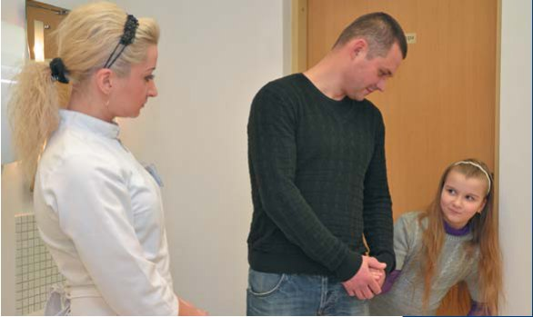
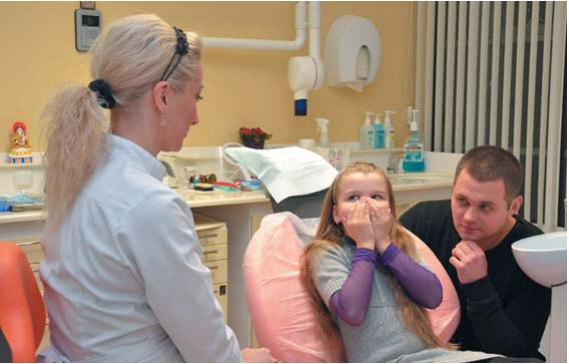
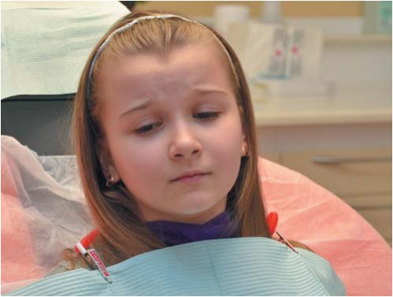

Своя справа · журнал «ДентАрт» 2013 №1 (70)
Аксіоми поведінки дитини на прийомі у стоматолога
THE AXIOMS OF CHILDREN'S BEHAVIOUR DURING A DENTAL VISIT
Поважайте чисте, ясне, непорочне, святе дитинство!
Януш Корчак (1878-1942), польський письменник, педагог, лікар
За даними наукових публікацій, дискусій з дитячими стоматологами на семінарах і особистих спостережень за їхньою роботою ми склали підбірку істин, які не вимагають доказів. Далі йдуть аксіоматичні висновки, що їх, на нашу думку, повинні взяти до відома співробітники дитячих стоматологічних клінік — лікарі, асистенти й адміністратори. Аксіоми розподілилися на такі групи:
- про дискомфорти, емоції і страх;
- про причини негативної поведінки дітей на стоматологічному прийомі;
- про батьків і спілкування з ними;
- про стратегії взаємодії з дітьми.

Про дискомфорти, емоції і страх
Усі діти світу плачуть однією мовою.
Леонід Леонов (1899-1994), російський письменник, громадський діяч
• Дитя не здатне витримувати біль. Йому бракує волі і усвідомлених мотивів терпіти настільки сильний дискомфорт
Висновки з цієї відомої обставини можуть бути різні: вважати нормою премедикацію (у деяких клініках, на жаль, панує така практика); максимально використовувати методи психологічного впливу, що дозволяють знижувати або повністю блокувати відчуття болю; застосовувати премедикацію суворо за показаннями і з урахуванням того, що психологічні методи не дали очікуваного ефекту. На нашу думку, премедикація повинна застосовуватися тільки після того, коли використані можливості психологічного впливу на дитину (див. том VI «Лікар, дитина, батьки»).
• У будь-якому віці діти шукають доказів своєї безпеки
У маленьких дітей потреба в захищеності забезпечується інстинктом самозбереження. У віці до 2,5-3 років дитя інстинктивно тягнеться до матері, становлячи з нею єдине «захищене Я». Стоматологи це розуміють і тому малюків лікують на руках у матері. Безпека у малят асоціюється з присутністю і турботливою поведінкою матері — вона повинна забезпечувати задоволення життєвих потреб.
У дошкільному і ранньому підлітковому віці діти продовжують шукати доказів безпеки навколишнього середовища. При цьому значно розширюється обсяг оцінюваних факторів: безпека життєвих ситуацій, стосунків з однолітками, вчителями і, звичайно, батьками.
Підліток також шукає доказів безпеки, що нерідко несе йому розчарування. Він хотів би, щоб батьки, як і раніше, піклувалися про нього і любили його безумовно, тобто просто тому, що він є. Проте їхня любов стала умовною. Щоб заслужити її, потрібно поводитися належним чином, добре вчитися, не засмучувати і не набридати. Батьки стали дозувати або приховувати від дитини свої справжні почуття, оскільки вважають, що вона вже велика і сантиментів не потребує. Подібна тактика поведінки дорослих підриває довіру дітей до них.
Підліток хотів би, щоб учителі цінували його самостійність, оригінальність, ставилися б до нього, як до суб'єкта. Але вони черстві, демонструють конвеєрний стиль стосунків, дитина для них — об'єкт навчання і виховання. Підліткові хотілося б дружити з однолітками, які б розуміли його, підтримували в ньому почуття власної гідності. Проте ровесники хочуть того ж, вони заздрісні, самостверджуються, відштовхують і принижують. Словом, навколишній світ здається підліткові ворожим. Реакція у відповідь звичайного підлітка — неприйняття правди людських стосунків: вони здаються егоцентричними, навіть жорстокими. А тут ще стоматолог зі своїм інтересом: «Давай лікувати зуби».
Персонал клініки на всіх етапах лікування повинен доводити пацієнтові-дитині будь-якого віку психологічну безпеку обстановки в медичній установі. Це обов'язкова умова подолання тривожності, побоювань і страху
• Коли діти підростають, їхній контроль власної безпеки з рівня інстинкту поступово все більше переходить на рівень інтелекту
З віком розум усе частіше і виразніше визначає, небезпечне середовище чи ні, і знаходить способи уникнення загроз з боку навколишньої дійсності. Здавалося б, домінування інтелекту в оцінці безпеки і засобів її досягнення — чинник еволюційний і позитивний. На жаль, це не зовсім так, тому що розумові нерідко заважають особистісні якості індивіда, що з'являються, і відсутність належного досвіду. Інстинкт спрацьовує «безпосередньо», а розум — опосередковано, тобто за участю характеру, волі, емоцій, почуттів і наявних знань. Якщо людина уперта, імпульсивна, погано відстежує причинно-наслідкові зв'язки явищ, самовпевнена, схильна до ризику, мало знає, то оцінка безпеки оточення дає збої і людина своєю поведінкою здатна шкодити собі.
Згадайте приклади з життя: пустотливий малюк ранить себе, цікава до всього дитина лізе в небезпечні для життя і здоров'я місця; гіперактивні підлітки нерідко потрапляють у біду, наражаються на неприємності і розплачуються за це свободою, здоров'ям і навіть життям. А все тому, що інстинкт самозбереження «вимкнено», а інтелект, опосередкований особистісними якостями господаря, не впорується з відповідальністю за безпеку.
Є і зворотний бік медалі: інтелект у багатьох випадках неадекватно оцінює наявність небезпеки/безпеки, більше того, дозволяє недоречно виявлятися інстинктові самозбереження. Саме це нерідко відбувається на стоматологічному прийомі: діти будь-якого віку можуть переходити на рівень інстинкту самозбереження. Лікарі і батьки намагаються пояснити необхідність лікування, обіцяють його безболісність, умовляють, погрожують, проте жодні апеляції до розуму не діють. Перемагає інстинкт, що діє автоматично. Стоматологи часто спостерігають інстинктивний страх навіть у поведінці дорослих.
• Вплив дійсності діти різного віку оцінюють поняттями комфорту і дискомфорту, тобто приємного і неприємного
Якщо очікування обіцяють неприємне, якщо відчуття несуть незручності, то виникають захисні реакції. Не кожен дорослий здатний пересилити себе, робити щось «через не хочу» і навіювати собі: «це не страшно», «треба потерпіти». Маленька дитина тим більше не здатна на такі самообмеження. Що ж до підлітків, то у них зазвичай є сила волі, і більшості вона допомагає долати дискомфорт у кріслі стоматолога. Проте психофізіологічна перебудова організму заважає цьому. Самосвідомість підлітка вже усуває такі «старі» механізми захисту, як вередування, плач і агресія, а нові, що діють з увімкненням свідомості, перебувають у зародковому стані. Дефіцит внутрішніх психічних ресурсів виявляється у спротиві старшим, цинізмі, нігілізмі, тобто в запереченні порядку, авторитетів, моральних норм, вимог дисципліни. У деяких випадках підлітки на стадії цинізму і нігілізму сприймають стоматолога тільки як представника старшого покоління (як батька або вчителя) і тому чинять опір його діям.
• У маленьких дітей афекти виявляються в генералізованій формі
Це означає, що на стан дискомфорту інтенсивно реагують різні сфери психічного — емоційна (різко псується настрій, дуже виразні гримаси на обличчі), пізнавальна (увага зосереджена на джерелі дискомфорту, і її важко перемкнути на інші об'єкти), моторна (рухове збудження). Якщо малюк засмучений, цей стан охоплює його повністю і усіма своїми сигнальними засобами він дає оточенню зрозуміти, що йому погано.

• У маленьких пацієнтів дискомфорт на стоматологічному прийомі зазвичай викликає афективні, перебільшені емоційні реакції
Якщо Ви це розумієте, у Вас вистачить розуму виявити терпіння у відповідь на плач, агресію, крик, посилені рухи тіла на знак опору. У такий спосіб малюк випускає негативну психічну енергетику. Він чинить цілком адекватно: даючи вихід потужній негативній психічній енергії, рятує психіку від перевантажень. Це ми, дорослі, ґвалтуємо свій мозок наказами: «тримай себе в руках», «демонструй своє виховання», «пожалій оточення». Ціна такого самовладання може бути високою: невроз, енергетичний удар по слабкому внутрішньому органу — серцю, печінці, кровоносній системі і т. д.
Щоразу, коли Ви ось-ось вибухнете, маючи справу з «важким» дитям, подивіться на нього з розумінням і подумайте: «Малюк — розумник, рятує свою психіку від деструкції». Майже напевно ваше роздратування зміниться співчуттям, а така емоція несумісна з негативною експресією. На вашому обличчі з'явиться вираз співчуття, доброти, ніжності. Дитина відреагує на цей сигнал і, цілком можливо, заспокоїться.
• Емоційний вплив дітей на дорослих багатозначний
Вередуючи, виявляючи агресію, упертість, грубощі та інші форми негативної поведінки, дитина зовсім не обов'язково боїться лікуватися. Вона хоче досягти тієї чи іншої своєї мети або, принаймні, хоча б означити її: привернути до себе увагу, заявити про свою присутність; задовольнити за допомогою сторонніх актуальну потребу, що виникла «тут і зараз»; задовольнити базову потребу, характерну для цього віку; покарати дорослих за що-небудь — за виявлену байдужість, несправедливість, пережитий дискомфорт, приниження почуття власної гідності; спровокувати конфлікт між близькими людьми (найчастіше матері з батьком, якщо один зазвичай її захищає, а другий засуджує і карає); уникнути відповідальності або неприємного заняття; викликати жалість до себе і т.д.
• Діти здатні перебільшувати емоційні сигнали, спрямовані на те, щоб спонукати дорослих діяти певним чином
Маленька дитина одночасно експресіоніст і імпресіоніст. Вона експресіоніст — здатна кричати, битися в істериці, щоб змусити дорослих припинити спроби заподіяти їй неприємність. Вона імпресіоніст — її гіпертрофована експресія спрямована на те, щоб глибоко вразити потенційних кривдників. При цьому її мало хвилюють переживання оточення, про що свідчить наступна аксіома.
• У ситуації стоматологічного лікування у дітей можуть спостерігатися регресивні форми поведінки
Регресивні форми поведінки — це короткочасні зниження в інтелектуальній і/або емоційній сфері дитини будь-якого віку, повернення до більш ранніх форм реагування, зумовлені стресовою ситуацією, розгубленістю, побоюваннями, страхом
Наприклад, хлопчик або дівчинка у звичайних життєвих обставинах поводиться адекватно «паспортному» віку: активно спілкується з дорослими, правильно відповідає на запитання, виконує прохання. У ситуації стресу та ж сама дитина реагує «по-дитячому»: упирається, грубіянить, чинить опір діям лікаря.
• Ознакою вираженої тривожності дітей є ухиляння від регулярних відвідувань стоматолога
Очевидно, лікар завжди повинен з'ясовувати, як часто і чи охоче дитина відвідує стоматологічну клініку. Не виключено, що з'явиться необхідність заздалегідь заспокоїти її, докласти додаткових зусиль, щоб довести безболісність і корисність лікування зубів.
Дитина копіює реакції оточення, оскільки схильна до «психологічного зараження»
Діти «заражаються» від оточення — членів сім'ї, однолітків і навіть випадкових зустрічних. Вони повторюють стереотипи емоцій, суджень і оцінок того, що відбувається, манери поведінки. Не всі маніфестації дитини свідчать про її суть, це може бути щось наносне, тимчасове, але таке, що вразило уяву. Нерідко негативні зразки поведінки інших людей дитина відтворює в стресових ситуаціях. Це один із захисних механізмів. Наприклад, на прийомі дівчинка 7 років посилає стоматолога на три букви. Лікареві хочеться тут же обуритися, проте потрібно розуміти підґрунтя поведінки дитини.
Діти ганьблять нас, коли на людях поводяться так, як ми поводимося удома
Невідомий автор
Не слід обурюватися, читати мораль. Зробіть паузу, щоб зафіксувати у свідомості дитини свою реакцію у відповідь, і попросіть її надалі не говорити поганих слів. Зазвичай діти самі розуміють, що чинять погано. Якщо дорослий намагається їх зрозуміти і виявляє терпіння і такт, вони самі коригують свою поведінку.
Про причини негативної поведінки дітей
Немає двох однакових дітей — особливо якщо одна з них ваша.
Невідомий автор
Негативна поведінка дитини в стоматологічному кріслі може бути зумовлена не лише тривогою, побоюваннями або страхом перед майбутнім лікуванням. Коли дитина чинить опір лікуванню, вередує, плаче, медперсоналові слід подумати про такі причини:
• Погане здоров'я
Якщо дитина страждає на яке-небудь соматичне захворювання, це, природно, впливає на її поведінку. Дитина ослаблена, на все чутливо реагує і, як правило, тривожна. Стоматолог, який веде прийом, не маючи відомостей про загальне здоров'я дитини (відсутня відповідна анкета), майже напевно пояснюватиме її негативну поведінку острахом лікувати зуби. З такого помилкового засновку вибудовуватиметься неправильна тактика встановлення контактів, наприклад, тиск на дитину, докори на її адресу.
• Утома дитини
За даними досліджень, понад 32% лікарів чинником, що впливає на поведінку дитини під час лікування, називають її втому. Причиною втоми найчастіше стає несвоєчасний прийом і тривалий лікувальний процес. Прояви втоми різні: діти стають млявими, вередливими, сонливими, агресивними.
• Функціональний дисбаланс систем організму
Стрибок у розвитку дітей супроводжується бурхливим ростом тіла, збільшенням внутрішніх органів. Адаптаційно-компенсаторні можливості дитячого організму зменшуються, тому діти схильні до захворювань, у тому числі карієсу.
У віці 7-8 і 12-14 років діти стають помітно вищими, як мовиться, витягуються вгору. Батьки зазвичай фіксують цей факт наприкінці літнього відпочинку. Внутрішні органи не встигають адаптуватися, змінитися за величиною услід за зростанням тіла. Діти іноді відчувають непояснені внутрішні болі, якщо займаються спортом, танцями, багато рухаються. У кабінеті стоматолога дитина може загострено відчути дискомфорт, а дорослі можуть подумати, що причина — лікування, яке проводиться в ротовій порожнині.
• Образа на матір за її нібито зраду
Коли мати приводить дитину на лікування до стоматолога, малюк може розцінювати це як зраду з її боку і заявляти про це протестною поведінкою.
З народження діти звикають до того, що мати — гарант безпеки, вона оберігає від неприємностей, завжди приходить на допомогу і сприяє в отриманні задоволення. Малюкові важко зрозуміти, чому мати раптом займає інакшу позицію і дозволяє незнайомій людині запускати руки йому в рот — інтимну, життєво важливу зону — і навіть заподіювати біль. Ще гірше, вона сприяє насильству, коли тримає його руки і голову або погрожує покаранням. Навіть якщо мати, перебуваючи в кабінеті, зберігає спокій, йому здається, що вона стає співучасником заподіюваної йому шкоди.
Протестна поведінка набуває особливої гостроти, коли у віці трьох-чотирьох років малюк прагне виявити свою самостійність. Усупереч бажанню його приводять до стоматолога, і це викликає подвійну образу на матір: вона — зрадниця і до того ж пригнічує дитину, котра прагне виявити свою самостійність. Незгоду зі «зрадою» і «насильством» маленька дитина виявляє у формі протестної поведінки, яка помилково інтерпретується як стоматофобія. Насправді ж це форма виходу з внутрішнього конфлікту: «Я жертва насильства. Мене зраджує власна мати. Я заливаюся сльозами від горя і несправедливості, але ніхто цього не розуміє. Пожалійте мене»!
Хоча логіка у маленької дитини в зародковому стані, проте вона здатна зробити висновок: «Мене кривдять та ще й погрожують!» Образа викликає новий приплив агресії.
Крик і плач малюка в кабінеті стоматолога — передусім засіб впливу на матір
У старшому віці діти здатні висловити свою образу на дорослих. Зі спогадів працівника служби безпеки стоматологічної клініки: «Мати і хлопчик років семи вийшли з клініки на вулицю. Він заплаканий, вириває руку з її руки і з надривом вимовляє: «Ти мене не любиш!» Очевидно, у такій формі пацієнт відреагував на материнську «зраду»: вона дозволила, щоб йому заподіяли біль, піддали важкому «випробуванню».
Негативний стоматологічний досвід — це не лише пам'ять про больові відчуття, це також несправедливість дорослих, що надовго запам'яталася, образа з приводу «стоматологічного насильства».
Чим категоричніше батьки наполягають на необхідності відвідин стоматологічної клініки, чим частіше в їхніх словах прослизають натяки на неприємність майбутніх процедур, чим довше приймається рішення піти до стоматолога, тим виразніше дитина розуміє, що на неї впливають примусом.

Усунути враження насильницького приведення до стоматолога можна лише у тому випадку, якщо візит у клініку подається як звичайна річ. Ще простіше пояснювати потребу з'явитися до лікаря, коли зуби не турбують і коли дитина привчена доглядати за ротовою порожниною. Досить сказати синові чи доньці: «Сходимо до лікаря і покажемо, чи правильно ми чистимо зубки».
Якщо перший візит до стоматолога обумовлений гострим болем, то відвідини лікаря діти, на відміну від дорослих, сприймають як продовження своїх мук. Дорослі, навіть боячись відвідувати стоматолога, бачать у ньому рятівника від болю чи інших проблем із зубами. Дитині це доводиться пояснювати.
• Дитина поводиться погано в кабінеті стоматолога тому, що хоче допекти батькам, покарати їх за щось
Відвідини стоматолога — ситуація неприємна, однак батьки наполягають на лікуванні. Дитина може на підсвідомому рівні інтерпретувати події так: мати і батько — співучасники неприємності, колись і в чомусь вони вчинили несправедливо, жорстоко, по-насильницькому, і ось трапилася нагода покарати їх. Влаштовується істерика, дитина чинить опір лікареві, розуміючи, що тим самим дратує батьків, виводить їх з терпіння. У такому разі потрібно подумати про те, щоб запропонувати батькам вийти з кабінету.
• Тривогу, побоювання і страх, що виникають перед лікуванням або в процесі лікування, може викликати стоматолог своїми словами або діями
Механізми ятрогенії відомі:
- лікарі вимовляють фрази, що містять ключове слово «біль» або його варіанти: «боляче не буде», «це не боляче», «щоб не було боляче, я помажу ясна спеціальною маззю» і т. п.;
- у полі зору пацієнта без попередження з'являються предмети, що викликають тривогу, побоювання або страх (шприц, слиновідсос, фотополімеризаційна лампа);
- дитину лякає шум двигунів, які приводять у дію стоматологічні прилади.
Слова, фрази, предмети, що наводять думку дитини на щось неприємне і небезпечне, є тригерами.
Тригер (від англ. «спусковий гачок») — слово, фраза, предмет довкілля — усе, що асоціюється з неприємними відчуттями або є їх провісником.
Вимога до всіх учасників передньої лінії в дитячій клініці (адміністраторів, асистентів, лікарів): звертаючись до дітей, ретельно підбирайте слова і аргументи, щоб уникнути мимовільного навіювання больових відчуттів, побоювань і страху.
Це вимога не здасться банальною, якщо прислухатися до спілкування персоналу клініки з дітьми. Тут нерідко звучать тригери, тобто провісники неприємних відчуттів. Одні співробітники не звертають на це увагу, не вважають тригери відхиленнями від норми, а інші належать до категорії «товстошкірих», не здатних до емпатії, тобто не можуть відчути себе на місці іншого.
• У кабінеті стоматолога може відтворюватися негативний досвід спілкування дитини з лікарями інших спеціальностей
Хтось із медиків прописував гіркі ліки, робив уколи, хтось обмежував свободу дій, порекомендувавши постільний режим. Неприємне відобразилося в довготривалій пам'яті і тепер переноситься на стоматолога. Попередній досвід контактів з лікарями може відтворюватися під впливом незначних, на перший погляд, деталей. Ось випадок, про який розповіла Р. Фріман (Велика Британія) у публікації, присвяченій психології спілкування на стоматологічному прийомі: «Жінка лікар-стоматолог, котра лікувала Нору, була доброю і терплячою, підбадьорювала дівчинку під час лікування, в чому їй допомагала і мати дитини. Нора лякалася, коли лікар сиділа поряд з нею. Мати пригадала, що коли Норі було чотири роки, їй робили під загальним наркозом тонзилектомію. Перед початком операції анестезіолог теж сідала поряд з Норою, щоб дати їй маску з наркозом. Для Нори це був травматичний досвід. Він відтворювався у контакті із стоматологом».
• Опір старшим
Небажання лікуватися у стоматолога може бути частиною захисного механізму в поведінці багатьох підлітків, тобто нігілізму, заперечення ролі старших і опору батькам, учителям, міліціонерам, лікарям і т. д. Якщо Ви розумієте, що потрапили в «загальну механіку» поведінки підлітка (опір старшим), скажіть собі: «Це напружує усіх. Потрібно прийняти підлітка таким, яким він є в складному періоді свого розвитку». Ви терплячі, спокійні, ваш голос не видає роздратування — для підлітка це сигнал, що його зрозуміли і прийняли у своєму єстві. Самосвідомість хлопчика або дівчинки зробить потрібний висновок: лікар — хороша людина, боятися його немає причин.
Про батьків і спілкування з ними
Яка матка, такі і дитятка.
Російське прислів'я
• Побоювання і страх перед стоматологом і лікуванням ротової порожнини часто формуються під впливом рідних і близьких
Цей факт неодноразово підтверджений науковими даними і практичним досвідом медперсоналу. Механізми навіяної стоматофобії відомі: або рідні, прагнучи допомогти дитині впоратися з очікуванням неприємного, мимоволі використовують тригери типу «не бійся», «страшно (боляче) не буде»; або у присутності дітей вони колись відтворювали картинки і пережиті стани на тему «як було боляче у стоматолога»; або озвучували свій негативний стоматологічний досвід в дусі «як я не люблю стоматологів».
Якщо лікування зубів для дитини є стресовою ситуацією, то батьки також перебувають у стресовому стані.
• Буває, батьки формують негативний стоматологічний досвід, коли застосовують насильство в кабінеті лікаря
Мати або батько грубо утримують малюка в кріслі, лискають. Дитина чинить опір і надовго фіксує у своїй свідомості поєднання двох чинників: лікування у стоматолога і насильство з боку близької людини.
• Особи супроводу завжди уважно спостерігають і оцінюють, як ставляться до дитини лікар і асистент
Приклади з відгуків мами по зворотному телефонному зв'язку: «Я була вражена байдужістю лікаря і асистента до моєї дитини. Вони нічого не зробили, щоб заспокоїти її».
«Ні лікар, ні асистенти не вміють поводитися з дітьми! За весь час лікування вони не сказали ні слова, щоб заспокоїти дитину, а іноді просто втрачали терпіння і починали відверто квапитися».
Зрозуміло, особи супроводу помічають і гарну роботу медперсоналу. Особливо радують відгуки, в яких говориться про позитивний вплив лікаря і його помічника на психологічний стан дитини: «У нас був негативний досвід лікування зубів в інших фірмах. Але після лікування у вас моя дитина перестала боятися. Це заслуга як лікаря, так і асистентки».
Сприйняття роботи медперсоналу дорослими клієнтами охоплює усі аспекти консультації і процесу лікування: дотримання заходів безпеки, ретельність огляду дитини, відповідальність при складанні рекомендованого плану лікування, доказовість пропонованих варіантів лікування і, звичайно, особливості спілкування з дитиною. Відвідуючи двох-трьох лікарів однієї або різних клінік, батьки розширюють діапазон спостережуваних явищ, мимоволі підвищують тим самим рівень своєї компетенції і роблять висновки, хто з лікарів і асистентів працює краще, а хто гірше.
З відгуків по зворотному телефонному зв'язку: «Дуже сподобалося лікування у лікаря Х і її асистента. З молодшим сином на останньому прийомі були в іншого стоматолога, де не було підходу до дитини ні з боку лікаря, ні з боку асистента».
Подібні зауваження осіб супроводу наштовхують на думку, що є стоматологи і асистенти, котрі: а) не рефлексують свою поведінку на прийомах; б) не завдають собі клопоту встановленням ефективних контактів з дітьми; в) не замислюються над тим, як працюють колеги і що корисного можна запозичити з їхнього досвіду спілкування з дітьми.
• Якщо вам вдалося знайти контакт з дитиною, вважайте, що контакт встановлено і з батьками, які привели її в клініку
Беручи до уваги цю аксіому, стоматолог проводить експрес-діагностику батьків і використовує адекватні прийоми встановлення стосунків з ними та формування терапевтичного союзу (див. детальніше в томі VI «Лікар, дитина, батьки»).
• Ніколи не сваріть дитину при батьках та інших особах супроводу, включаючи бабусь, дідусів, братів, сестер, нянь
Чим старша дитина, тим чутливіше вона сприймає критику на свою адресу. Доки їй 4-6 років, невдоволення з боку старших викликає бурхливий емоційний протест: грубощі, підвищену активність, опір вимогам. З віком захисна реакція переживається більше внутрішньо: дитина замикається, ображається, почуває себе пригніченою, приниженою.
Критика на адресу дитини зачіпає самолюбство батьків.
Якщо люди говорять погане про твоїх дітей — це означає, вони говорять погане про тебе.
Василь Сухомлинський (1918-1970), видатний український педагог
• Чим старша дитина, тим виразніше вона переживає критику на рівні самосвідомості, сприймає критику як приниження почуття власної гідності
Буває, батьки приєднуються до критики стоматолога на адресу дитини: «Слухай лікаря», «Я тебе покараю за те, що не даєш лікувати». У подібних випадках опір лікуванню може посилюватися, а страждання дитини можуть ще більше травмувати її психіку. Стоматологи помилково вважають, що така участь батьків — доказ виникнення терапевтичного союзу.
• Спілкуючись на прийомі з особами супроводу, потурбуйтеся, щоб дитина не чула того, що може насторожити і налякати її
Деякі стоматологи чомусь вважають, що малюк у кабінеті ігнорує розмови старших. Навпаки, він уважно до всього дослухається: як би чого не сталося, чи готова мати захищати його, гарний чи поганий цей лікар? Із спостережень психолога:
…Стоматолог у присутності дитини пояснює матері: «Потрібно під загальним наркозом видалити чотири зуби». Здавалося б, «вирок» лікаря незрозумілий шестирічному пацієнтові, але чому він при словах лікаря увесь напружився?
...Лікар пояснює батькові дитини, що лікування буде складним і тривалим. Дівчинка розплакалася.
…«Ці передні зуби доведеться видалити, дівчинка походить без зубів, доки що-небудь не придумаємо», — говорить лікар, показуючи мамі рот дитини. Дівчинка враз засмутилася і хотіла встати з крісла, щоб піти з кабінету.
Про стратегії взаємодії з дітьми
Діти дуже часто розумніші, ніж дорослі, і завжди щиріші.
Максим Горький (1868-1936), російський письменник
• Нейтралізація негативної поведінки дитини починається до входу в кабінет стоматолога
Важливу роль відіграє участь батьків у підготовці дитини до візиту в клініку. Головне — не насторожувати її, не підкреслювати неприємності та відповідальності моменту. Відвідини стоматолога — звичайний захід. Адміністратор, записуючи дитину на прийом, радить вибрати час з урахуванням режиму денного відпочинку малюка, їди. У клініці є ігрова кімната, де пацієнт може відволіктися від неприємних думок про майбутнє лікування. Якщо це сучасна клініка, тут передбачено ті чи інші моделі попередньої релаксації дітей, є аніматор або психолог (див. детальніше том VII «Сервіс — дітям»).
• Не можна обдурювати дітей
Якщо перед візитом до лікаря дитині сказали, що буде зроблено тільки огляд і покажуть, як доглядати за зубками, то проводити лікування буде нечесно. У разі потреби розпочати лікування потрібно запитати згоди дитини і мотивувати її. Наприклад, лікар, завершивши огляд, говорить: «Чи хочеш ти полікувати зуб сьогодні, щоб не приходити вдруге?» Або: «Ти згоден полікувати зуб сьогодні, щоб мама ще раз не відпрошувалася з роботи?»
• Діти у будь-якому віці потребують позитивної емоційної підтримки з боку дорослих
Навчіться легко і без зволікань підкріплювати позитивними емоціями виконання дитиною ваших прохань, виявлене нею терпіння, дисципліну. У вас завжди напоготові радісна усмішка, широко розплющені веселі очі, підбадьорливий голос. При цьому позитивні емоції мають бути досить інтенсивними, розрахованими на дитяче сприйняття. Скупі емоції, що супроводжуються невиразною експресією, не досягають зон адекватного реагування з боку дітей. Передусім це стосується малюків.
• Спонукаючи переляканих дітей відкрити рот, показати зубки і розпочати лікування, ніколи не вдавайтеся до погроз
Інстинктивний страх не можна подолати погрозами. Погроза у цій ситуації викликає у дитини додатковий опір. Дорослі розуміють, що погрожувати дітям недобре, проте вони роблять це мимоволі, не замислюючись над суттю своїх вимог і висловлювань. Наприклад, погроза звучить в інтонації, з якою лікар вимовляє фрази «перестань упиратися», «якщо так поводитимешся, я тебе не лікуватиму», «якщо я не вилікую твій зуб, він болітиме».
Найгірше, коли стоматологи розглядають погрозу як атрибут своєї практики. Ось витяг з анонсу однієї дитячої стоматологічної клініки, що свідчить про психологічну некомпетентність авторів: «У нашій клініці не обділені увагою і маленькі пацієнти. Прийом ведуть лікарі, котрі пройшли спеціальну психологічну підготовку, уміють згладити травму дитячої психіки при відвідуванні стоматолога. Якщо Ваша дитина під жодними погрозами не сідає в крісло стоматолога, а лікувати зубки потрібно, залишається один засіб — загальна анестезія, технікою якої наші лікарі володіють досконало».
Можливо, стоматологи цієї установи досконало опанували загальну анестезію, але те, що вони не мають психологічної підготовки, очевидно. Психологічно освічені стоматологи не згадуватимуть погроз як засобу саджання дітей у крісло.

• У відповідь на захисну поведінку дитини у вигляді гніву, агресії і крику не можна відповідати тим же
Якщо виявити у відповідь негативні емоції, це викличе ефект «емоційного дзеркала», тобто негативний стан дитини посилиться при сприйнятті негативного стану дорослого.
• Спілкуючись з дітьми, забудьте про будь-які форми повчання і докорів
Прийнятно дати пораду дитині, доречно поцікавитися, як вона сама оцінює ситуацію. Можна поставити за приклад однолітків, молодшого або старшого брата, сестру. При цьому не повинно бути негативного порівняння, типу «ось він (вона) хороший, а ти поганий».
• Не можна демонструвати дітям і особам супроводу байдужість і тим більше негативну позицію когось із членів стоматологічної команди
Відхилення від цієї аксіоми спостерігаються в різних формах. Наприклад, адміністратор не стала завдавати собі клопоту пошуком часу для запису дитини на прийом у зручний для неї час; батькові, коли подзвонив, обіцяла повідомити по телефону про вихід на роботу лікаря, але зателефонувати забула; записала дитину на прийом, не з'ясувавши, чи немає у неї підвищеної температури тіла (у такій ситуації дітей лікують у стаціонарі). Недбале ставлення до батьків виявив лікар, що видно з рекламацій по зворотному зв'язку: прийняв рішення про лікування, не отримавши їхнього схвалення; не погодив вартість, агітував за премедикацію і обіцяв, що вона мине без проблем, а насправді дитина витримала її важко.
• При взаємодії з дитиною слід виходити з її поведінки в клінічній ситуації, а не керуватися віком, зазначеним у її медичній картці
Наприклад, якщо п'ятирічний малюк на прийомі повівся як трирічний, то спершу потрібно поводитися з ним як з трирічним. Недоречні докори: «ти вже великий», «такі дітки, як ти, поводяться добре» і т. п. Оцінивши психічний статус дитини, а також позицію батьків, ви приймаєте рішення, чи потрібно поступово міняти тактику спілкування з цією дитиною і доводити її до вікової норми, чи цього робити не слід. При цьому ви не повинні виходити за рамки своєї компетентності. Ви не психотерапевт, щоб змінювати поведінку дитини за допомогою спеціальних корекційних заходів. Ви не педагог, щоб давати батькам грамотні поради. Ви — лікар, робіть свою роботу.
• У той же час стоматолог зобов'язаний реагувати на будь-які помічені аномалії у здоров'ї та поведінці дитини — такий канон сучасної стоматології
Приклад з практики. Дитячий стоматолог з великим стажем розповідає колегам про чотирирічну пацієнтку, яка носить памперси. Лікар емоційно обговорює ситуацію: «Як таке може бути? Куди дивиться мати? Що далі буде з дівчинкою?»
Випадок нетиповий, і потрібно виявити делікатність. Будь-який вплив на дитину категорично виключений. Але з мамою потрібно обов'язково довірчо поговорити, щоб, по-перше, дізнатися причину носіння памперсів, а по-друге, порадити звернутися до когось із фахівців (психотерапевта, уролога).
• Стратегія взаємодії з дітьми на прийомі повинна враховувати їхні вікові інтелектуальні можливості
Зрозуміле підліткові буде порожнім набором слів для шестирічки. Якщо лікар хоче запрограмувати дитину на позитив, потрібно використати звернення і аргументи з урахуванням вікових інтелектуальних відмінностей. Можна розраховувати на очікуваний ефект, якщо говорити, наприклад
- дошкільнятам: «Посидь з відкритим ротом, доки я рахуватиму до десяти»;
- дітям 7-8 років: «Посидь з відкритим ротом, рахуючи про себе до десяти»;
- дітям 12 років і старшим: «Коли виростеш, у тебе будуть красиві, здорові зуби».
• Маленька дитина керується не розумом і не мораллю, тому слід відмовитися від раціонального підходу до неї
Не слід розраховувати на ефективність умовлянь, аргументів і обіцянок чогось корисного і приємного. Усе, чого вона потребує, — це задоволення її базових потреб і отримання задоволення від цього «тут і зараз».
• Діти неформальні, зазвичай відкриті і простодушні, тому швидко відгукуються на природний і дружній підхід
Замість «Доброго дня, Петю!» краще сказати: «Привіт, Петрику, як ти сьогодні?» Замість «Ходи сюди, сідай», скажіть: «Ти, звичайно, хочеш швидше сісти в це цікаве крісло. Ти сам сядеш чи тобі допомогти?» Такі фрази звучать неформально і водночас стимулюють прояв самостійності.
Література
- Бойко В.В. Психология и менеджмент в стоматологии. Том I. Клиника — «под ключ». СПБ, 2009. 1008 с.; Психология и менеджмент в стоматологии. Том VI. Врач — ребенок — родитель. СПБ, 2012. 480 с. Психология и менеджмент в стоматологии. Том VII. Сервис — детям. CПБ, 2012. 200 с.